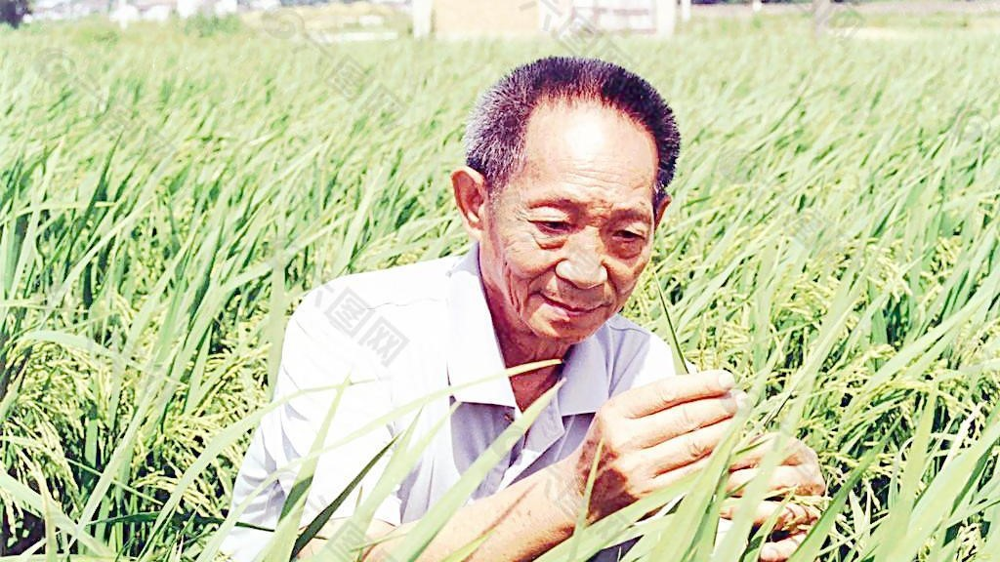
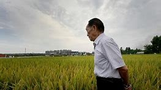

袁隆平
袁隆平（1930年9月7日-2021年5月22日)，男，汉族，生于北京 ，无党派人士，江西省九江市德安县 人。中国杂交水稻育种专家，中国研究与发展杂交水稻的开创者，被誉为“杂交水稻之父” 。曾任国家杂交水稻工程技术研究中心、湖南杂交水稻研究中心主任、湖南省政协副主席 、中国工程院院士、美国国家科学院外籍院士 、中国发明协会会士 、湖南农业大学名誉校长 、第五届全国人大代表、第六至十二届全国政协常委 。
水稻研究
- 1953年8月，袁隆平毕业于西南农学院（现西南大学）农学系。
- 1960年7月，袁隆平在农校试验田中意外发现一株特殊性状的水稻。
- 1966年2月28日，袁隆平发表第一篇论文《水稻的雄性不孕性》。
- 1973年10月，袁隆平在水稻科研会议上发表了《利用“野稗”选育三系的进展》论文。
- 1975年11月，袁隆平攻克了“制种关”，摸索总结制种技术成功，成功地育成了杂交水稻。
- 2020年6月，袁隆平团队在青海柴达木盆地盐碱地里试种的高寒耐盐碱水稻成功。
主要成就
- 1974年育成第一个杂交水稻强优组合南优2号 。
- 1975年研制成功杂交水稻制种技术，从而为大面积推广杂交水稻奠定了基础 。
- 1986年袁隆平提出了杂交水稻的育种战略，将杂交水稻的育种从选育方法上分为三系法、两系法和一系法三个战略发展阶段。
- 1997年，袁隆平又提出了旨在提高光合作用效率的超高产杂交水稻形态模式和选育技术路线，开始了“中国超级杂交水稻”的研究。
- 2020年11月2日，在湖南省衡阳市衡南县清竹村进行的袁隆平领衔的杂交水稻双季测产达到了亩产1530.76公斤。
获奖记录
| 年份 | 奖项 |
|---|
| 2015 | 第十四届世界杰出华人奖 |
| 2014 | 国家科学技术进步奖、特等奖 |
| 2018 | 中国著名科学家奖 |
| 2007 | 影响世界华人终身成就奖 |
| 2004 | 世界粮食奖 |
| 2001 | 首届国家最高科学技术奖 |
袁隆平与水稻


人物评价
袁隆平从事杂交水稻研究已经半个世纪了，不畏艰难，甘于奉献，呕心沥血，苦苦追求，为解决中国人的吃饭问题做出了重大贡献。先生的杰出成就不仅属于中国，而且影响世界。